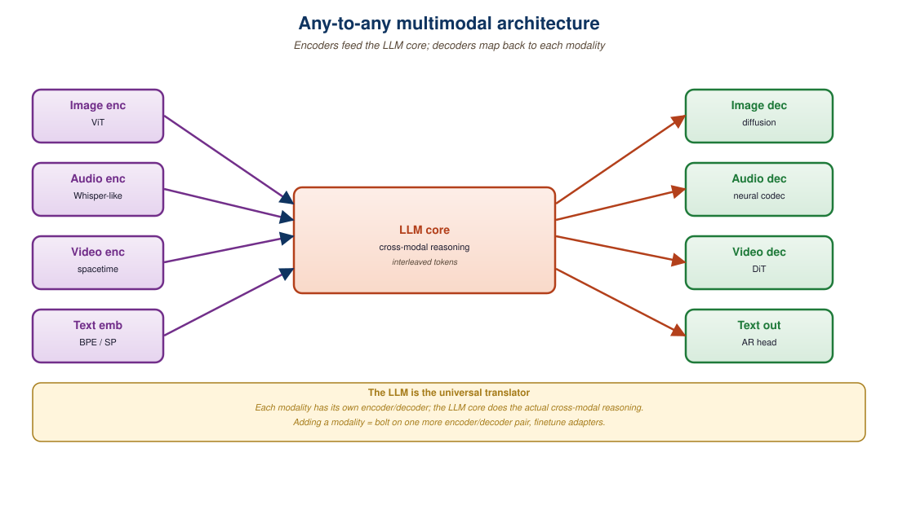

"A model that can describe a sound effect should be able to make one. A model that can recognize a melody should be able to hum it back."
Spirit behind the any-to-any research agenda, 2023 onward
"Any-to-any" generation is the goal of a single model that can consume any modality and produce any modality. Given a text prompt, the same model produces text, image, audio, or video. Given an image plus text, it produces a new image or describes it in audio. NextGPT, AnyGPT, Unified-IO 2, and CoDi-2 were the academic prototypes through 2023-2024; Gemini 2.0 and Llama-4-Omni are the frontier instantiations in 2025. The dominant pattern: an LLM core that emits semantic latents, plugged into modality-specific diffusion decoders. This section looks at the architecture, the training recipe, and the open questions that keep any-to-any from being a clean solved problem.

37.3.1 The Encoder-LLM-Decoder Pattern
The dominant any-to-any recipe, used by NextGPT (Wu et al., 2023), Unified-IO 2 (Lu et al., 2023), and CoDi-2 (Tang et al., 2024), looks like this:
- Input encoders: each modality has its own encoder (ImageBind, CLAP, BEATs, ViT). Encoders produce embeddings projected into the LLM's embedding space, the mid-fusion pattern from Section 37.2.
- LLM core: a text LLM (Vicuna, Mistral, Llama) that processes the unified input embedding sequence and emits an output embedding sequence containing both text tokens and special "modality tokens" that signal a generation request.
- Output decoders: when the LLM emits a modality token, the corresponding decoder (Stable Diffusion for images, AudioLDM for audio, Zeroscope for video) consumes a learned latent the LLM produces and synthesizes the output.
The architecture is intentionally modular: each piece (vision encoder, LLM, image decoder) is pretrained independently, and only thin alignment layers are trained jointly. Training cost is a fraction of a frontier omni model's, which is why this pattern dominated 2023-2024 academic work.
37.3.2 NextGPT and the Alignment Tokens
NextGPT (Wu et al., 2024) introduced the trick of generation alignment tokens. Special tokens like [IMG] and [/IMG] mark spans in the LLM's output that should be interpreted as image-generation requests. The hidden states at those positions are projected into a fixed-size latent that becomes the conditioning input to a frozen Stable Diffusion decoder.
# Schematic of NextGPT-style any-to-any inference.
# The LLM emits special tokens that route generation
# to modality-specific decoders.
def any_to_any_generate(model, prompt):
output_tokens, output_hidden = model.llm(prompt)
results = []
i = 0
while i < len(output_tokens):
tok = output_tokens[i]
if tok == "[IMG]":
# Find matching close tag; pool the hidden states inside
j = output_tokens.index("[/IMG]", i)
latent = model.image_projector(output_hidden[i:j].mean(dim=0))
img = model.stable_diffusion(cond_latent=latent)
results.append(("image", img))
i = j + 1
elif tok == "[AUD]":
j = output_tokens.index("[/AUD]", i)
latent = model.audio_projector(output_hidden[i:j].mean(dim=0))
aud = model.audio_ldm(cond_latent=latent)
results.append(("audio", aud))
i = j + 1
else:
results.append(("text", tok))
i += 1
return results37.3.3 AnyGPT: Discrete Tokens Across All Modalities
AnyGPT (Zhan et al., 2024) takes the early-fusion route to its logical end. Every modality is tokenized into a discrete vocabulary:
- Text: byte-pair encoding.
- Image: SEED-Tokenizer, a 256-token codebook per 256x256 image.
- Audio: SpeechTokenizer, a residual-VQ codec with 8 codebooks per frame.
- Music: Encodec, RVQ-style codec.
The model is a single autoregressive transformer trained on interleaved sequences of these discrete tokens. Inputs and outputs use the same vocabulary; the model picks which to emit based on conditioning. Training data is constructed by pairing text descriptions with tokenized media (LAION images, AudioCaps audio, MusicCaps music).
The pure-discrete approach is elegant but lossy: the tokenizers introduce a quality ceiling. AnyGPT compensates by chaining a high-quality continuous decoder after the discrete output, the discrete tokens act as a semantic plan that a downstream diffusion model fleshes out. This is the same pattern that GPT-4o image generation appears to use.
| Model | Input Modalities | Output Modalities | Architecture | Released |
|---|---|---|---|---|
| NextGPT | text, image, audio, video | text, image, audio, video | LLM + alignment tokens + diffusion decoders | 2023 |
| Unified-IO 2 | text, image, audio, video, depth, normals | text, image, audio | Encoder-decoder transformer + VQ tokenizers | 2023 |
| AnyGPT | text, image, audio, music | text, image, audio, music | Single autoregressive transformer over discrete tokens | 2024 |
| CoDi-2 | text, image, audio, video | text, image, audio, video | LLM + LDM with cross-modal attention | 2024 |
| Llama-4-Omni | text, image, audio, video | text, image, audio | Native early-fusion + diffusion image head | 2025 |
| Gemini 2.0 | text, image, audio, video | text, image, audio | Native multimodal + agent tooling | 2024-2025 |
The 2024-2026 consensus pattern: use a discrete LLM to plan the output (a sequence of semantic tokens) and a continuous diffusion or codec model to render it. The LLM is good at long-range reasoning and structure; the diffusion model is good at high-fidelity local detail. This factorization mirrors classical NLP (planning + surface realization) and lets each subsystem play to its strengths. Pure-discrete (AnyGPT) and pure-continuous (image-only diffusion) are both Pareto-dominated.
37.3.4 Training Data: The Bottleneck
The reason any-to-any models lag specialist models on every individual modality is data. A specialist image generation model trains on billions of (caption, image) pairs. A specialist audio generation model trains on millions of (caption, audio) pairs. Any-to-any models need cross-modal data: examples where the input and output are different modalities. This data is rare:
- Text-image pairs: LAION-5B and successors. Plentiful.
- Text-audio pairs: AudioCaps, Clotho. Hundreds of thousands of examples.
- Image-audio pairs: VGGSound, AudioSet (with video frames). Millions but noisy.
- Audio-image pairs: rare; usually mined from video.
- Cross-modal instruction data: synthesized by prompting strong models (GPT-4o, Gemini). Quality varies.
The 2025 trick: use frontier any-to-any models to generate synthetic cross-modal pairs that train the next generation. This is the same flywheel that powered text instruction data via Self-Instruct and is the closest thing the field has to a scaling lever.
37.3.5 Quality and the Frontier Gap
Open-source any-to-any models (NextGPT, AnyGPT, CoDi-2) produce output noticeably weaker than dedicated single-modality models on every axis: their images are blurrier than SD3, their audio is less natural than ElevenLabs, their video is jerkier than Veo 3 or Sora 2. The gap closes for frontier proprietary omni models (Gemini 2.0, GPT-4o, Llama-4-Omni) because they get to train on the entire pretraining corpus and have access to internal modality-specific models for distillation.
In 2026, the practical pattern remains: use any-to-any models for their cross-modal reasoning, fall back to specialist models when you need maximum quality on a single modality. The hybrid pattern from Section 37.1 applies recursively, even within an any-to-any pipeline.
Any-to-any models often work well within a modality (text understanding, image understanding) and degrade sharply when generating across modalities, especially toward less common ones (audio, video). Always test the cross-modal generation paths you actually care about; do not assume that good text-to-image quality implies good text-to-audio or image-to-video quality. The training data thin spots are typically the failure modes.
37.3.6 Tool-Calling as an Alternative
A pragmatic 2025 alternative to a single any-to-any model is an LLM agent that calls modality-specific tools. The text LLM is the orchestrator; specialized generation models are invoked via function calling. ChatGPT with DALL-E 3, Claude with image-generation tools, and most production "AI assistants" use this pattern. It is the limit of the pipeline approach from Section 37.1, extended to many modalities.
The advantage: each tool is independently best-in-class. The disadvantage: the orchestrator's cross-modal reasoning is limited to whatever passes through the tool-call interface (typically text), so paralinguistic and fine-grained visual cues are lost. This trade-off, as throughout this chapter, depends on whether your product needs cross-modal reasoning or just orchestration.
A 2025 educational startup built a tutor product that needed to (a) understand a child's verbal question, (b) reason about a textbook image the child uploaded, (c) explain a concept in text, and (d) generate an illustrative diagram. Initial prototype used GPT-4o for the conversational core plus a DALL-E 3 tool call for diagrams; this worked but felt disjointed. The 2026 production version uses Gemini 2.5's native image generation through the same conversation thread, producing diagrams that reference earlier visual context in the conversation. End-to-end consistency rose from 62% to 89% on internal evals, justifying the higher per-request cost.
Any-to-any generation is a research direction, not a fully solved capability. The dominant architecture (LLM core + modality encoders + diffusion or codec decoders) cleanly factorizes the problem and lets each component leverage pretrained models. Frontier omni models (Gemini 2.0, GPT-4o, Llama-4-Omni) realize this at scale; open-source any-to-any models (NextGPT, AnyGPT, CoDi-2) demonstrate the architecture but lag on per-modality quality. Cross-modal training data remains the binding constraint. For most production use cases in 2026, an LLM-orchestrated tool-calling pipeline plus a native model for the conversational core is the right pragmatic stack.
- Why does NextGPT need special "alignment tokens" in the LLM's output, and what would happen if the model just emitted free-form text describing the desired image?
- AnyGPT tokenizes audio with SpeechTokenizer (8 RVQ codebooks per frame). Why is this 8x more expensive than tokenizing images with SEED?
- What is the empirical reason any-to-any models lag specialist models on each modality?
- Sketch when a tool-calling LLM agent is preferable to a true any-to-any model and when it falls short.
What Comes Next
Section 37.4: Frontier Omni Models deep-dives the production omni systems (GPT-4o, Gemini 2.0, Llama-4-Omni, Chameleon) with their architectures, capabilities, and cost profiles.